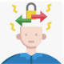

Rx:
1.Cap Fluoxetine 10mg N=30 daily
2. Tab Clomipramine 25mg N=30 daily
1️⃣ MDD
2️⃣ اختلالات اضطرابی
✔️فوبیا اختصاصی
✔️Generalized anxiety disorder
✔️ Social anxiety disorder
3️⃣ اختلال شخصیتی OCD
4️⃣ اختلالات سایکوتیک
5️⃣ اختلال تیک
6️⃣ سایر اختلالات :
✔️body dysmorphic disorder
✔️تریکوتیلومانیا
✔️anorexia nervosa
✔️قمار